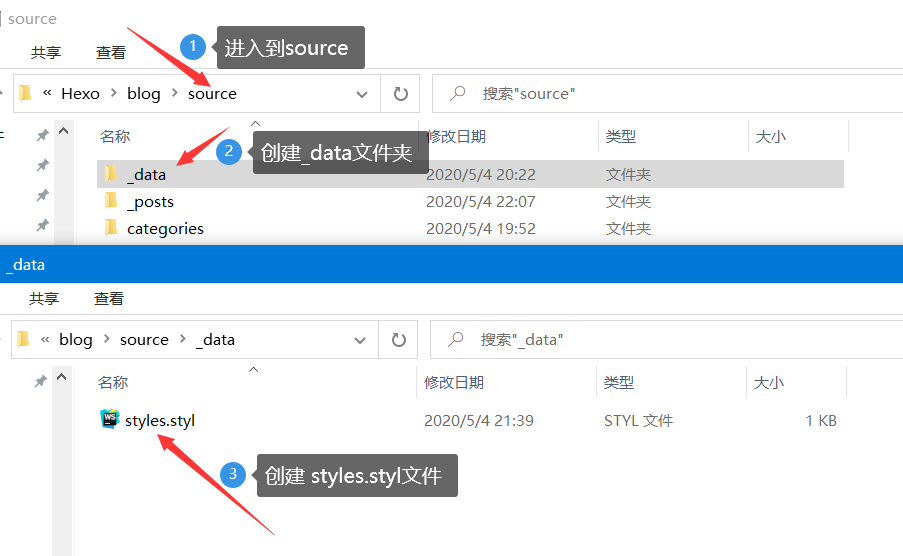
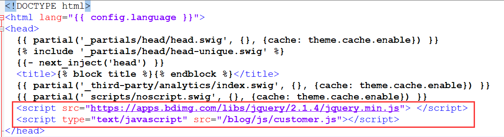
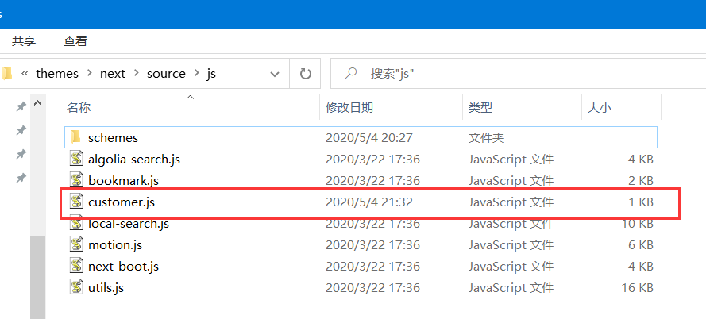

最近,一直在瞎搞HEXO.但是自己是个喜欢瞎折腾的人,不喜欢条条框框的,所以折腾一下,自己写CSS和JS,这样相当于自定义了.为了防止自己忘记,也算是给后人乘凉,特此记录一下.
教程使用Next主题
自定义CSS文件
进入到主题配置文件
\blog\themes\next\_config.yml,找到以下位置,去掉注释
在hexo安装目录下的
source文件夹,按图所示创建文件(此处路径和上面的style值一致即可,可以自定义文件夹名)
现在,按CSS语法写代码即可.使用控制台查看所需要修改的类名,在此文件中覆盖想要修改的类名即可;也可以添加自己的类名,插入自己的HTML块.
自定义JS文件
进入到
blog\themes\next\layout,打开_layout.swig文件
按照HTML语法引入script文件即可
<!-- 引入JQuery文件-->
<script src="https://apps.bdimg.com/libs/jquery/2.1.4/jquery.min.js"> <\/script>
<!-- 引入自己的JS文件,此处的src,由于我的博客目录是在域名下的二级目录,所以此处多了blog,如果你的博客在一级目录,则无需要blog-->
<script type="text/javascript" src="/blog/js/customer.js"><\/script>
进入到
blog\themes\next\source\js,新建JS文件
在此文件里编写自己的JS代码即可